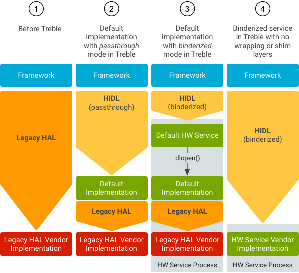

Android O re-architects the Android OS to define clear interfaces between the
device-independent Android platform and device- and vendor-specific code.
Android already defines many such interfaces in the form of HAL interfaces,
defined as C headers in hardware/libhardware. HIDL replaces these
HAL interfaces with stable, versioned interfaces, which can be client- and
server-side HIDL interfaces in C++ (described below) or
Java.
The pages in this section describe C++ implementations of HIDL interfaces,
including details about the files auto-generated from the HIDL .hal
files by the hidl-gen compiler, how these files are packaged, and
how to integrate these files with the C++ code that uses them.
HIDL interfaces have client and server implementations:
In transitioning from libhardware HALs to HIDL HALs, the HAL
implementation becomes the server and the process calling into the HAL becomes
the client. Default implementations can serve both passthrough and binderized
HALs, and can change over time:

Figure 1. Development progression for legacy HALs.
Start by including the HAL libraries in the makefile:
LOCAL_SHARED_LIBRARIES += android.hardware.nfc@1.0shared_libs: [ …, android.hardware.nfc@1.0 ]Next, include the HAL header files:
#include <android/hardware/nfc/1.0/IFoo.h> … // in code: sp<IFoo> client = IFoo::getService(); client->doThing();
To create the HAL implementation, you must have the .hal files
that represent your HAL and have already generated makefiles for your HAL using
-Lmakefile or -Landroidbp on hidl-gen
(./hardware/interfaces/update-makefiles.sh does this for internal
HAL files and is a good reference). When transferring over HALs from
libhardware, you can do a lot of this work easily using c2hal.
To create the necessary files to implement your HAL:
PACKAGE=android.hardware.nfc@1.0
LOC=hardware/interfaces/nfc/1.0/default/
make hidl-gen -j64
hidl-gen -o $LOC -Lc++-impl -randroid.hardware:hardware/interfaces \
-randroid.hidl:system/libhidl/transport $PACKAGE
hidl-gen -o $LOC -Landroidbp-impl -randroid.hardware:hardware/interfaces \
-randroid.hidl:system/libhidl/transport $PACKAGE
For the HAL to work in passthrough mode (for legacy devices), you must have
the function HIDL_FETCH_IModuleName residing in
/system/lib(64)?/hw/android.hardware.package@3.0-impl(-$OPTIONAL_IDENTIFIER).so
where $OPTIONAL_IDENTIFIER is a string identifying the passthrough
implementation. The passthrough mode requirements are met automatically by the
above commands, which also create the android.hardware.nfc@1.0-impl
target.
Next, fill out the stubs with functionality and setup a daemon. Example daemon code (supporting passthrough):
#include <hidl/LegacySupport.h>
int main(int /* argc */, char* /* argv */ []) {
return defaultPassthroughServiceImplementation<INfc>("nfc");
}
defaultPassthroughServiceImplementation will
dlopen() the provided -impl library and provide it as
a binderized service. Example daemon code (for pure binderized service):
int main(int /* argc */, char* /* argv */ []) {
Nfc nfc = new Nfc();
nfc->registerAsService();
}
This daemon should live in $PACKAGE + "-service" (for example,
android.hardware.nfc@1.0-service). The
sepolicy for a specific class
of HALs is the attribute hal_<module> (for instance,
hal_nfc). This attribute must be applied to the daemon that runs a
particular HAL (if the same process serves multiple HALs, multiple attributes
can be applied to it).